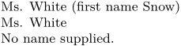

Syntax (autogenerated)
| \dodoubleempty\command[...][...] | |
| \command | csname |
| [...] | text |
| [...] | text |
Syntax
| \dodoubleempty\commmand |
| \dodoubleargument\commmand |
Description
\dodoubleempty is used to write commands that can take zero, one, or two square-bracketed arguments: if the user specifies less than two arguments, it adds empty arguments at the end to make up the missing numbers.
\dodoubleargument used to be a variant that required exactly two arguments, but is now a synonym. It is still used alongside \dodoubleempty to remind the programmer that the arguments are requird instead of optional, but the difference is semantic rather than syntactic.
So, \dodoubleempty\command leads to:
\command[#1][#2] % or \command[#1][] % or \command[][] % ,
depending on the generosity of the user. Afterwards one can use the \iffirstargument, \ifsecondargument, ... tests to determine how many arguments were actually passed.
There are variants of this command that will supply anywhere up to seven optional arguments:
- \dosingleempty
- \dodoubleempty
- \dotripleempty
- \doquadrupleempty
- \doquintupleempty
- \dosixtupleempty
- \doseventupleempty
Example
This is the standard pattern for writing a command that takes an optional number of arguments:
-
% This command accepts two optional arguments \def\writename% {\dodoubleempty \dowritename} % This command looks at how many non-empty arguments % are supplied, and acts accordingly \def\dowritename[#1][#2]% {\ifsecondargument Ms. #2 (first name #1)% \else\iffirstargument Ms. #1% \else No name supplied.% \fi\fi} \writename[Snow][White] \par \writename[White] \par \writename
- 
See also
- Commands with optional arguments
- syst-aux.mkiv
- \dodoublegroupempty to supply optional arguments in braces
Help from ConTeXt-Mailinglist/Forum
All issues with: